国別索引
項目を国・地域ごとにまとめています。
アメリカ合衆国16イギリス5イタリア2エジプト1オーストラリア1ギリシャ1チベット1チリ1ドイツ2ネパール1ノルウェー1フランス2プエルトリコ1ペルー2マレーシア1メキシコ1ルーマニア1ロシア2日本12諸説あり6
アメリカ合衆国16項目
 心霊・幽霊屋敷アミティヴィルの恐怖一家が28日で逃げ出したとされる家。ベストセラーと映画で世界に広まったが、事件を担当した弁護士が「話は作り物だった」と証言している。
心霊・幽霊屋敷アミティヴィルの恐怖一家が28日で逃げ出したとされる家。ベストセラーと映画で世界に広まったが、事件を担当した弁護士が「話は作り物だった」と証言している。 UFO・UAPエリア51ネバダ州の砂漠にある米空軍の秘密施設。存在自体が長く否定されていたが、2013年に機密解除文書で公式に認められた。UFO伝説の中心地。超常現象心霊写真写らないはずのものが写った写真。19世紀に商売として始まり、最初の有名な撮影者は裁判にかけられた。
UFO・UAPエリア51ネバダ州の砂漠にある米空軍の秘密施設。存在自体が長く否定されていたが、2013年に機密解除文書で公式に認められた。UFO伝説の中心地。超常現象心霊写真写らないはずのものが写った写真。19世紀に商売として始まり、最初の有名な撮影者は裁判にかけられた。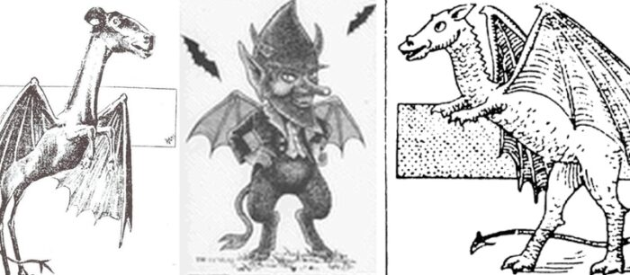
UMA・未確認生物ジャージー・デビル米国ニュージャージー州の森に棲むとされる有翼の怪物。起源は18世紀の政治的な中傷にあった可能性が指摘されている。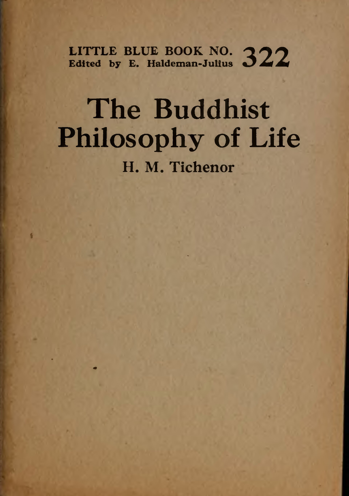
超常現象前世の記憶幼い子どもが前世を語るという事例。バージニア大学が2,500件以上を50年かけて収集し、学術的な記録として残している。 奇妙な場所タオス・ハム一部の人だけに聞こえる低い唸り音。世界各地で報告され、調査が行われてきたが、音源はいまだ特定されていない。
奇妙な場所タオス・ハム一部の人だけに聞こえる低い唸り音。世界各地で報告され、調査が行われてきたが、音源はいまだ特定されていない。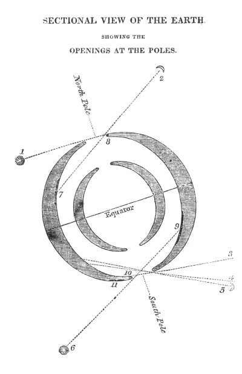
奇妙な場所地球空洞説地球の内部は空洞で、内側に別の世界があるという説。19世紀の米国では議会に探検隊派遣の請願が出され、実際に可決された。 都市伝説血まみれメアリー暗い部屋で鏡に向かい名前を3回唱えると現れるとされる霊。心理学の実験で、この状況では実際に顔が歪んで見えることが確認されている。超常現象テレポーテーション伝説米海軍が駆逐艦を消したとされる「フィラデルフィア計画」。だが当日その船は別の場所におり、話の出所は一人の男の手紙だった。
都市伝説血まみれメアリー暗い部屋で鏡に向かい名前を3回唱えると現れるとされる霊。心理学の実験で、この状況では実際に顔が歪んで見えることが確認されている。超常現象テレポーテーション伝説米海軍が駆逐艦を消したとされる「フィラデルフィア計画」。だが当日その船は別の場所におり、話の出所は一人の男の手紙だった。 UMA・未確認生物ビッグフット北米の森林地帯で目撃される、二足歩行の大型類人猿とされる存在。1967年に撮影された動画が最大の根拠であり、同時に最大の争点でもある。
UMA・未確認生物ビッグフット北米の森林地帯で目撃される、二足歩行の大型類人猿とされる存在。1967年に撮影された動画が最大の根拠であり、同時に最大の争点でもある。 UFO・UAPプロジェクト・ブルーブック米空軍が17年間続けたUFO調査。12,618件を調べ、701件を「未確認」のまま残して終了した。記録は全て公開されている。
UFO・UAPプロジェクト・ブルーブック米空軍が17年間続けたUFO調査。12,618件を調べ、701件を「未確認」のまま残して終了した。記録は全て公開されている。 呪い・呪物ホープダイヤモンド持ち主を不幸にするとされる青いダイヤ。だがその「呪い」の逸話の多くは、宝石商が売るために作った宣伝文句だった。
呪い・呪物ホープダイヤモンド持ち主を不幸にするとされる青いダイヤ。だがその「呪い」の逸話の多くは、宝石商が売るために作った宣伝文句だった。 消失事件メアリー・セレスト号1872年、大西洋で無人のまま漂流していた帆船。船は無事で積荷も残っていたが、乗員10人は誰一人見つからなかった。
消失事件メアリー・セレスト号1872年、大西洋で無人のまま漂流していた帆船。船は無事で積荷も残っていたが、乗員10人は誰一人見つからなかった。 UMA・未確認生物モスマン1966年から67年にかけて米国ウェストバージニア州で目撃された、赤く光る目を持つ有翼の人型。橋の崩落事故と結びつけて語られるようになった。
UMA・未確認生物モスマン1966年から67年にかけて米国ウェストバージニア州で目撃された、赤く光る目を持つ有翼の人型。橋の崩落事故と結びつけて語られるようになった。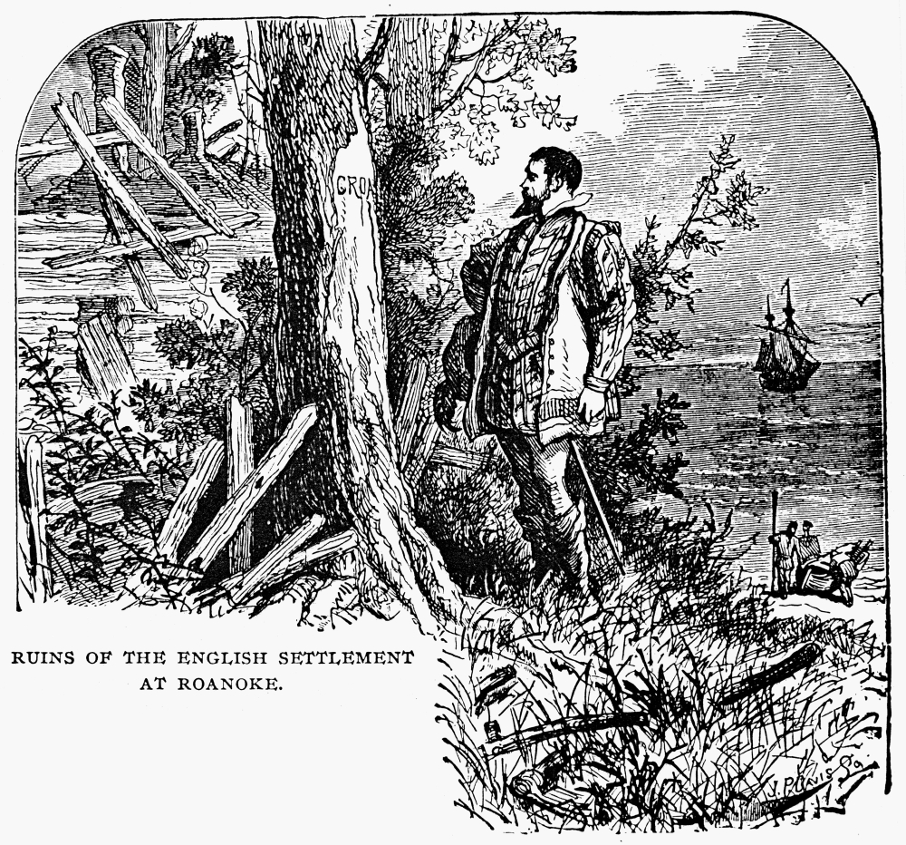
消失事件ロアノーク植民地1590年、補給に戻った総督が見たのは無人の集落だった。115人が消え、柱に彫られた「CROATOAN」の一語だけが残されていた。 UFO・UAPロズウェル事件1947年、米軍が「空飛ぶ円盤を回収した」と発表し、翌日に撤回した事件。UFO史上もっとも有名な出来事であり、政府の公式説明は30年以上を経て二度変更された。
UFO・UAPロズウェル事件1947年、米軍が「空飛ぶ円盤を回収した」と発表し、翌日に撤回した事件。UFO史上もっとも有名な出来事であり、政府の公式説明は30年以上を経て二度変更された。イギリス5項目
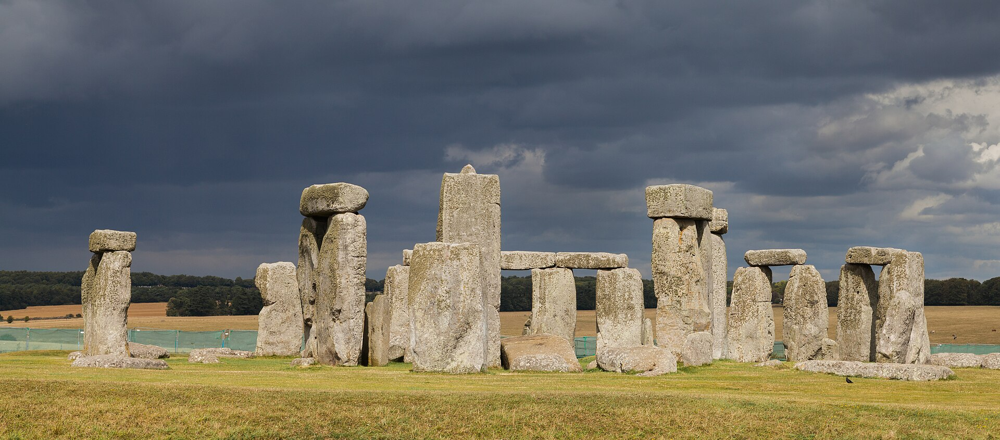
古代の謎ストーンヘンジ4,500年前の巨石建造物。誰が作ったかは分かっているが、なぜ作ったかは分かっていない。石の一部は250キロ離れた場所から運ばれていた。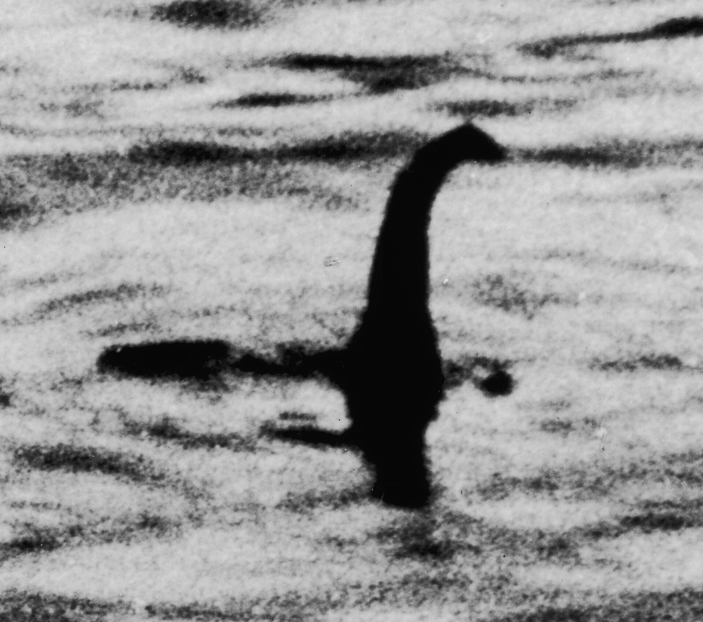
UMA・未確認生物ネッシースコットランドのネス湖に棲むとされる巨大生物。1934年の一枚の写真が世界的な知名度を決定づけたが、その写真は60年後に作り物だと告白された。秘密結社フリーメイソン世界最古とされる友愛結社。世界を裏で操っているという陰謀論の主役にされてきたが、名簿も会館も公開されており、実態は儀礼を重んじる会員制の団体である。心霊・幽霊屋敷ボーリー牧師館「イングランドで最も幽霊が出る家」と呼ばれた館。だがその評判を作った調査者自身が、現象を捏造していた疑いを後年に指摘された。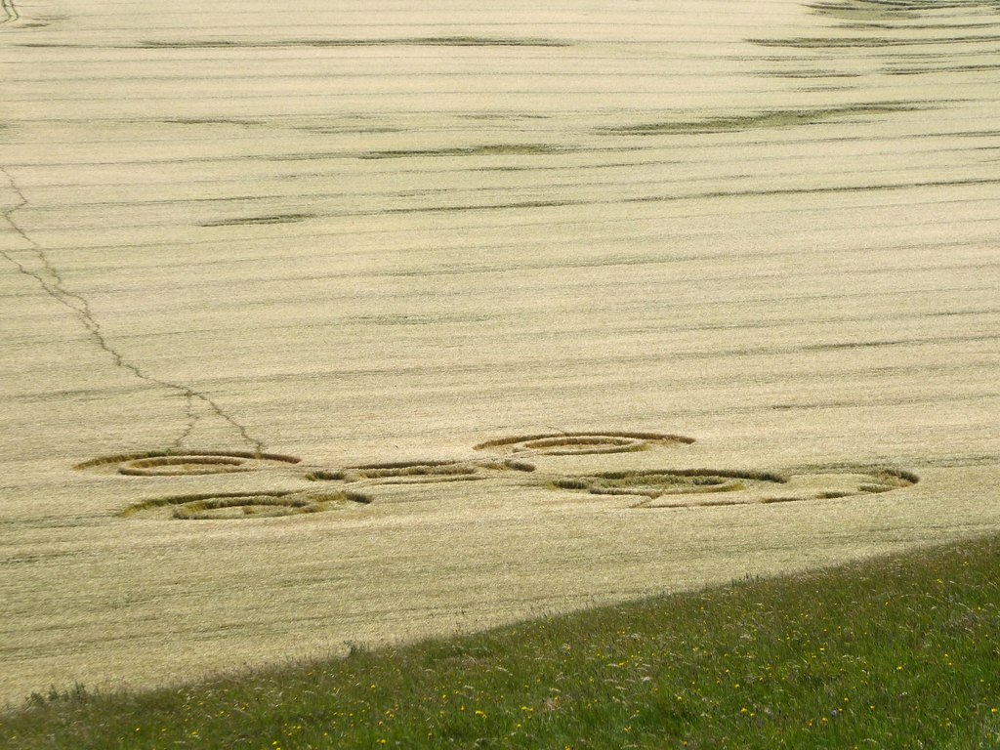
UFO・UAPミステリーサークル麦畑に一夜で現れる幾何学模様。1991年、2人の英国人が「自分たちが板とロープで作った」と告白し、実演してみせた。イタリア2項目

エジプト1項目
オーストラリア1項目
ギリシャ1項目
チベット1項目
チリ1項目
ドイツ2項目
ネパール1項目
ノルウェー1項目
フランス2項目
プエルトリコ1項目
ペルー2項目
マレーシア1項目
メキシコ1項目
ルーマニア1項目
ロシア2項目
日本12項目
犬鳴村伝説都市伝説犬鳴村伝説福岡県に「日本国憲法が通用しない村」があるという噂。実在するのは廃道になった旧トンネルと、そこで実際に起きた凄惨な事件である。 都市伝説八尺様身長約240センチの女性の姿をした怪異。2008年に匿名掲示板へ投稿された物語で、ネット発の怪談としては異例の広がりを見せた。
都市伝説八尺様身長約240センチの女性の姿をした怪異。2008年に匿名掲示板へ投稿された物語で、ネット発の怪談としては異例の広がりを見せた。
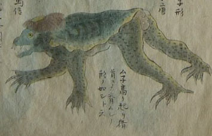
妖怪・民間伝承河童日本全国に伝わる水辺の妖怪。頭の皿、甲羅、キュウリ好き。地域ごとに呼び名も姿も違い、伝承の分布そのものが研究対象になっている。都市伝説きさらぎ駅2004年、匿名掲示板に「存在しない駅に着いた」と実況が書き込まれた。ネット時代に生まれた異界譚の代表例で、いまも書き込みは残っている。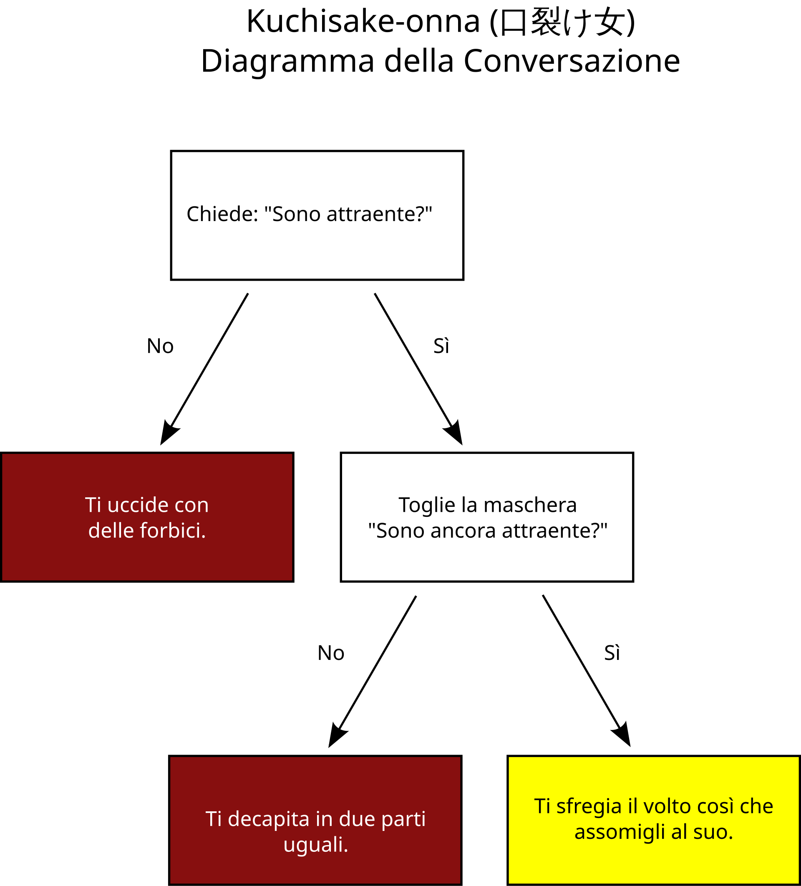
都市伝説口裂け女1979年、日本全国の小学生のあいだに数か月で広まった怪異。集団下校や警察の巡回にまで発展した、日本の都市伝説の原型。超常現象こっくりさん十円玉が勝手に動いて質問に答える遊び。動く仕組みは19世紀に科学的に説明され、実験でも確認されている。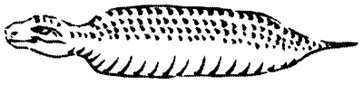
UMA・未確認生物ツチノコ胴が異常に太い日本の蛇状生物。自治体が高額の懸賞金をかけ、捜索イベントが行われてきた、日本でもっとも「行政が本気になった」未確認生物。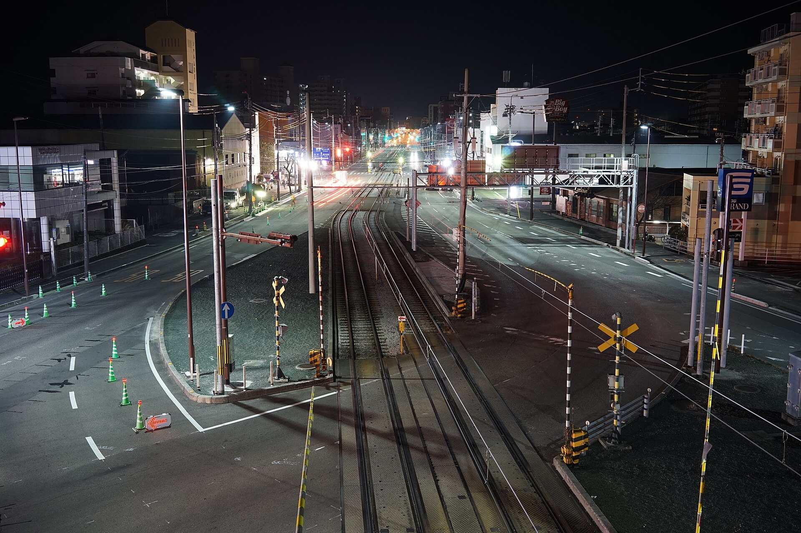
都市伝説テケテケ上半身だけで這い回る女の霊。北海道発とされ、線路と踏切という近代的な舞台を持つ点で、古い妖怪と性格が異なる。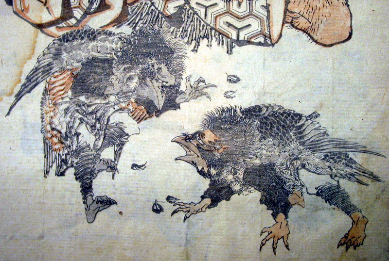
妖怪・民間伝承天狗山に棲む赤ら顔で鼻の長い妖怪。もとは中国から来た凶星の名で、犬の姿だった。日本で山伏の姿と結びついて現在の形になった。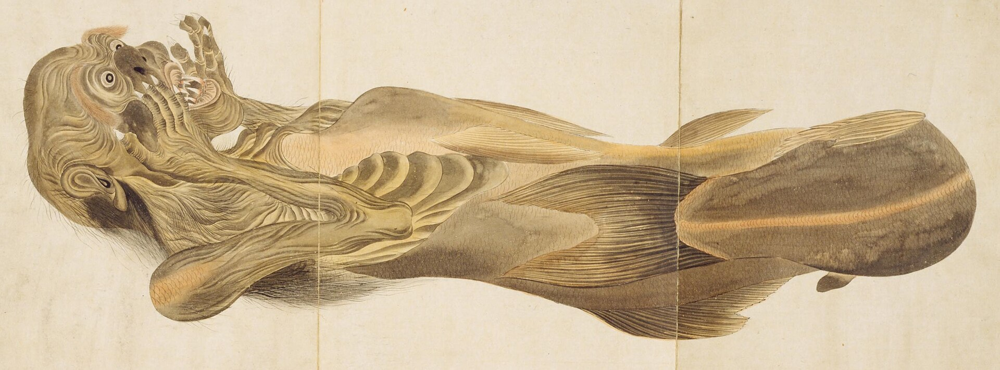
呪い・呪物人魚のミイラ日本各地の寺社に伝わる人魚のミイラ。2022年、岡山の寺の1体がCTスキャンと DNA解析で徹底的に調べられた。都市伝説八尺様身長約240センチの女性の姿をした怪異。2008年に匿名掲示板へ投稿された物語で、ネット発の怪談としては異例の広がりを見せた。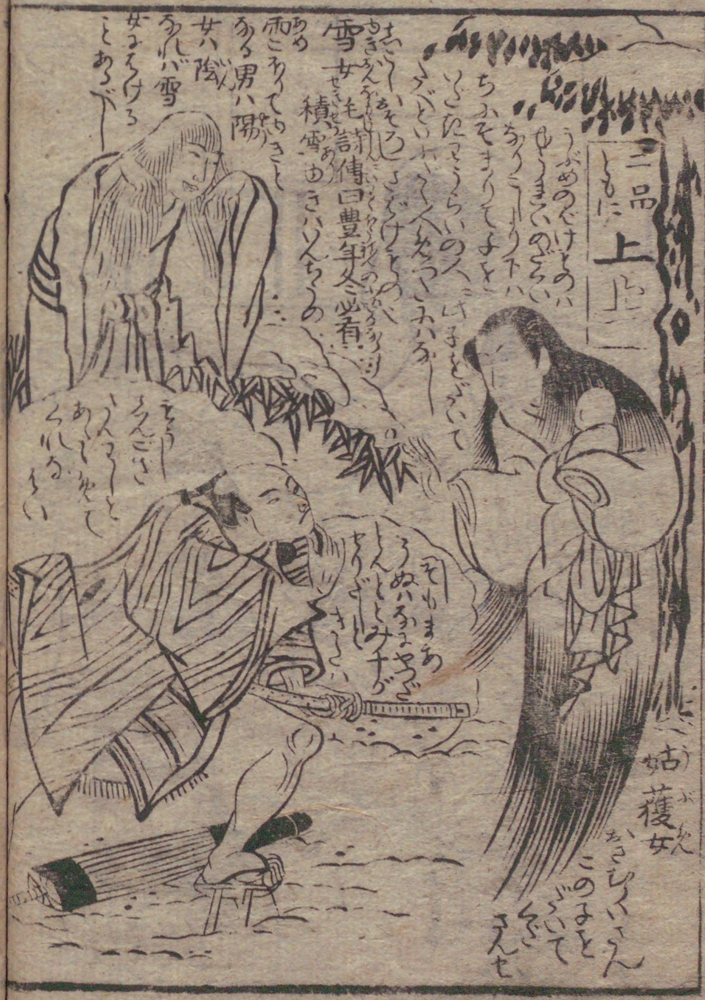
妖怪・民間伝承雪女雪の夜に現れる白い女。全国的に知られる姿は、明治期に外国人作家が書いた一編によって固まった面がある。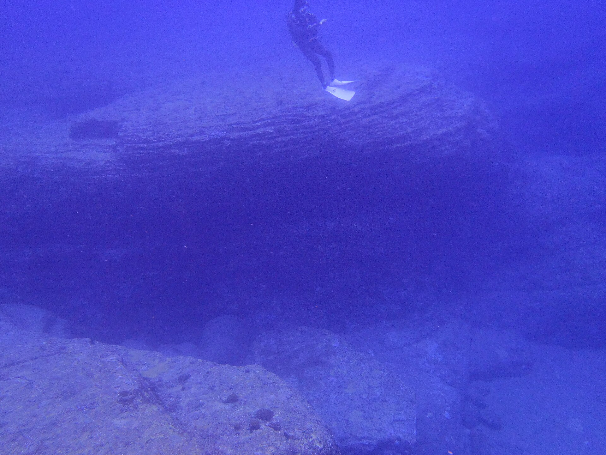
失われた文明与那国島海底地形沖縄の海底に沈む階段状の巨大な岩。人工の遺跡か自然の地形かで、専門家の見解が真っ二つに分かれている。諸説あり6項目
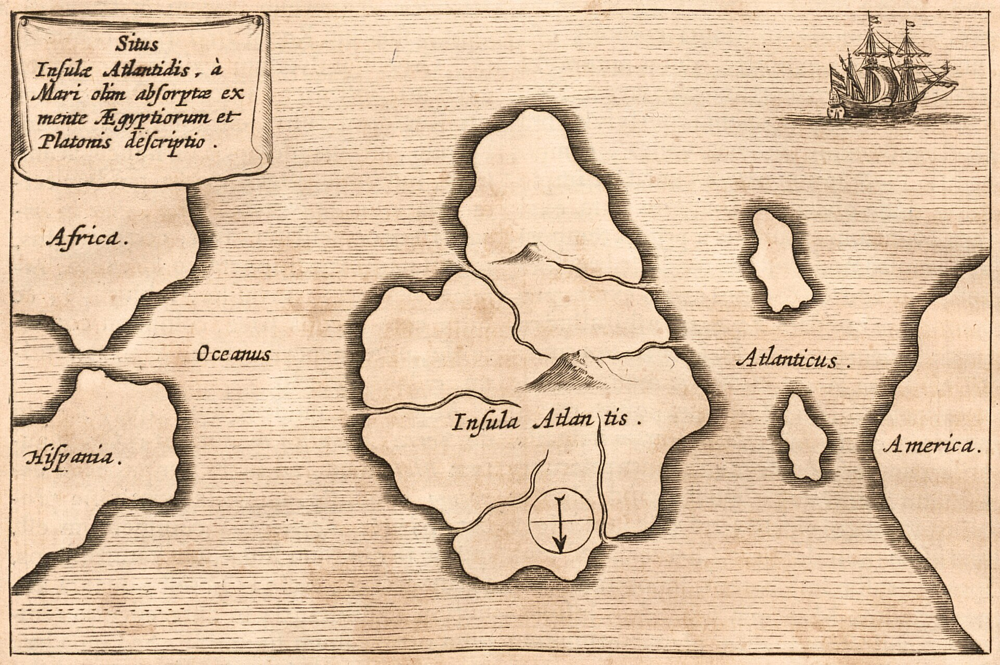
失われた文明アトランティス一夜にして海に沈んだとされる古代の大国。出典はプラトンの対話篇2編のみで、それ以前にこの島に言及した文献は存在しない。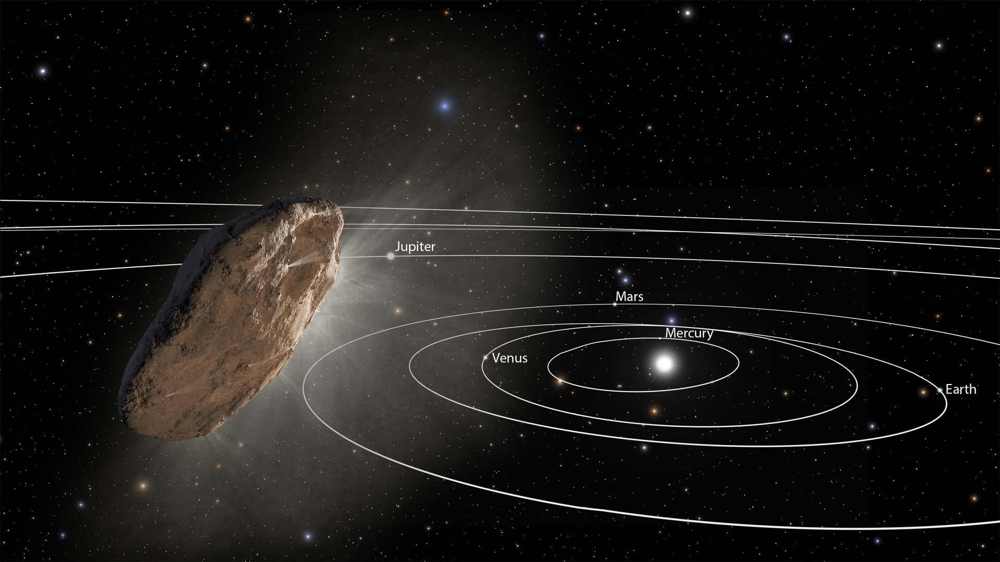
UFO・UAPオウムアムア太陽系外から来た最初の天体。細長い形と、説明のつかない加速から、ハーバードの天文学者が人工物の可能性を提起した。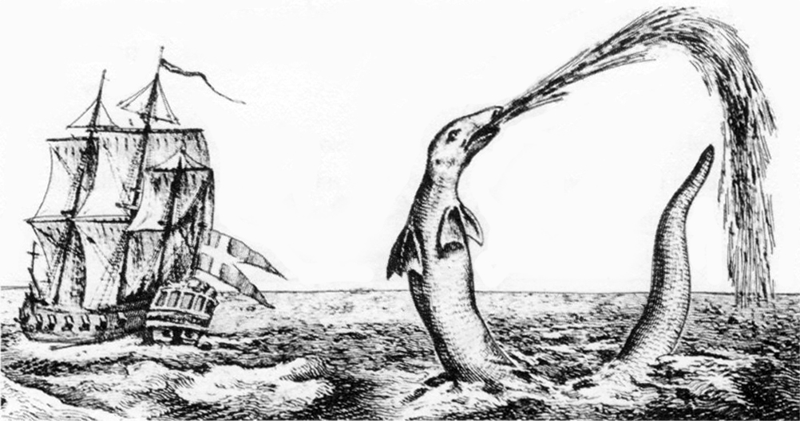
UMA・未確認生物シーサーペント大航海時代から報告されてきた巨大な海の生物。目撃の一部は、後に実在が確認された動物で説明がついた。超常現象人体自然発火人が突然燃え上がるとされる現象。多くの事例に共通する条件があり、「ウィック効果」という物理現象で説明できるとする実験が行われている。 奇妙な場所バミューダ・トライアングル船と飛行機が消えるとされる大西洋の三角海域。だが保険会社も沿岸警備隊も、この海域を特別に危険とは扱っていない。
奇妙な場所バミューダ・トライアングル船と飛行機が消えるとされる大西洋の三角海域。だが保険会社も沿岸警備隊も、この海域を特別に危険とは扱っていない。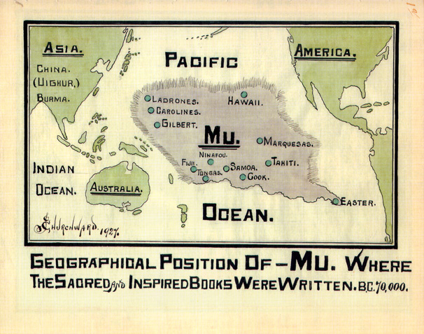
失われた文明ムー大陸太平洋に沈んだとされる大陸。20世紀の著述家が古代文書の解読と称して提唱したが、その文書は実在が確認されていない。